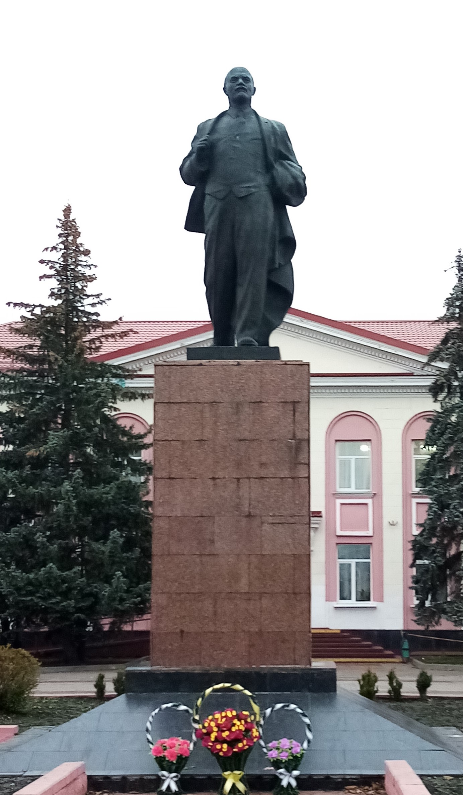

Памятник Владимиру Ильичу Ленину

Владимир Ильич Ульянов родился в 1870 году в Симбирске. Ленин - русский революционер, крупный теоретик марксизма, советский политический и государственный деятель, создатель Российской социал-демократической рабочей партии (большевиков), главный организатор и руководитель Октябрьской революции 1917 года в России, первый председатель Совета народных комиссаров РСФСР и Совета народных комиссаров СССР, создатель первого в мировой истории социалистического государства. Ленин умер 21 января 1924 года. Памятник Ленину был установлен в 1959 году.